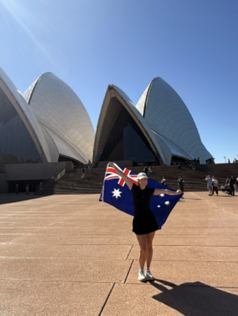
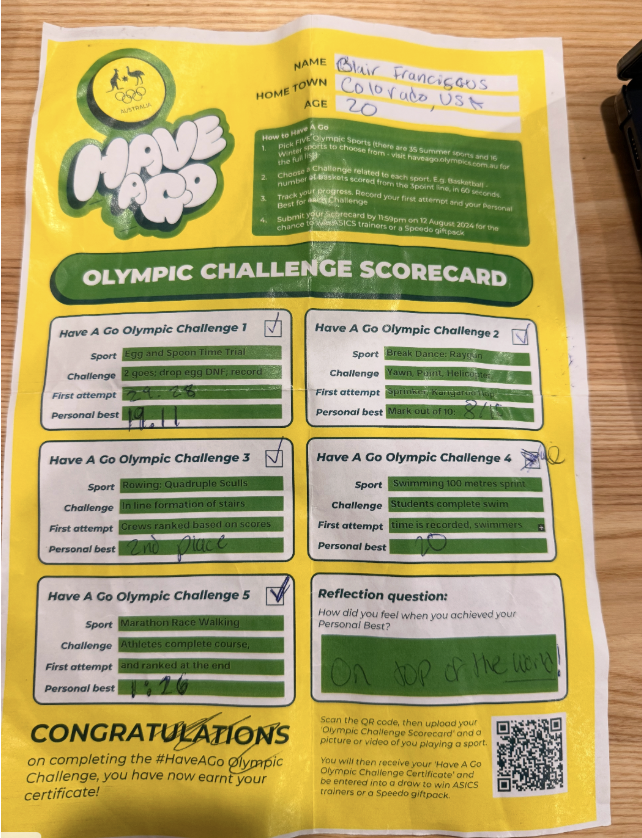
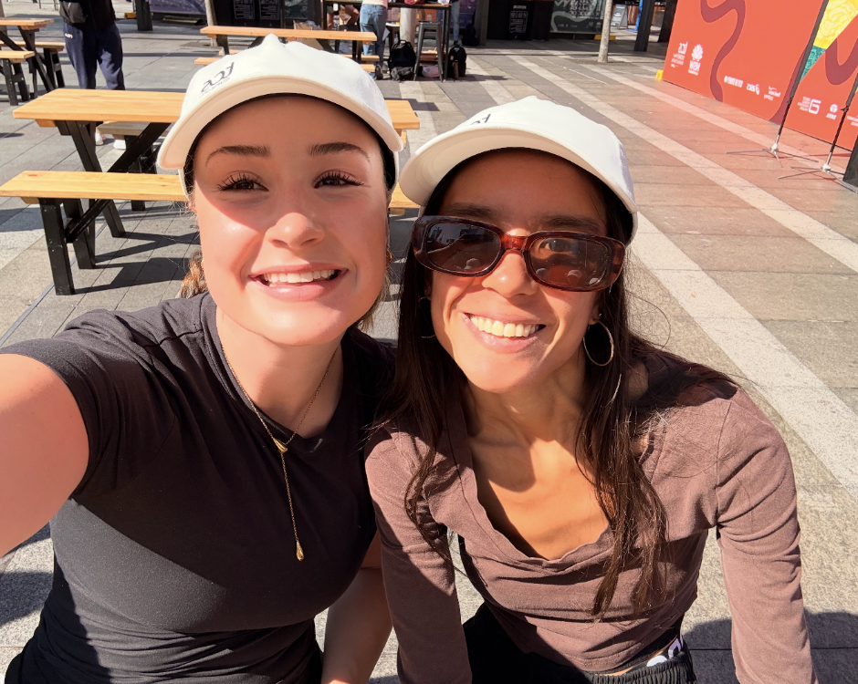
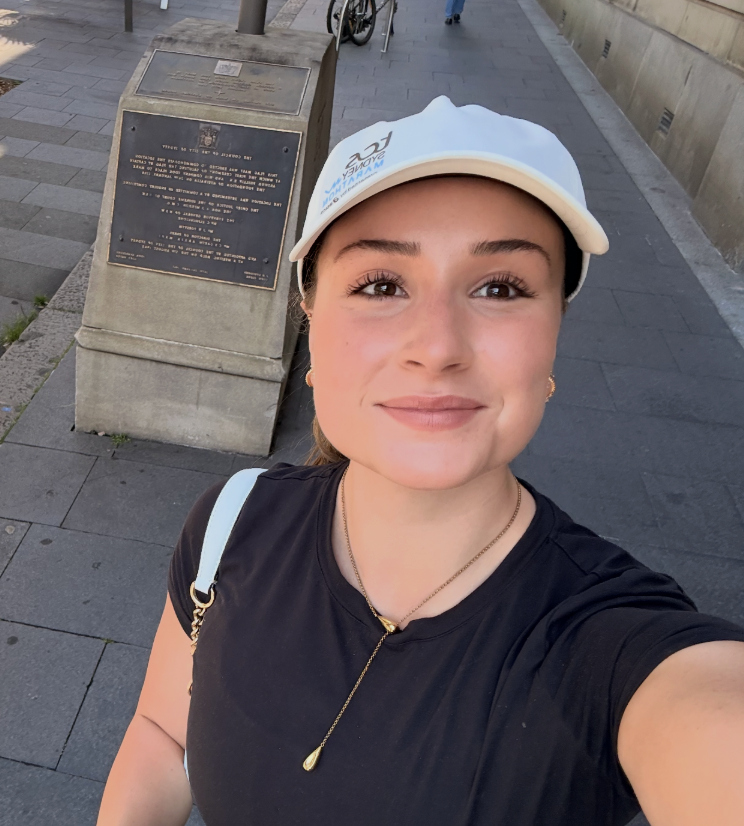
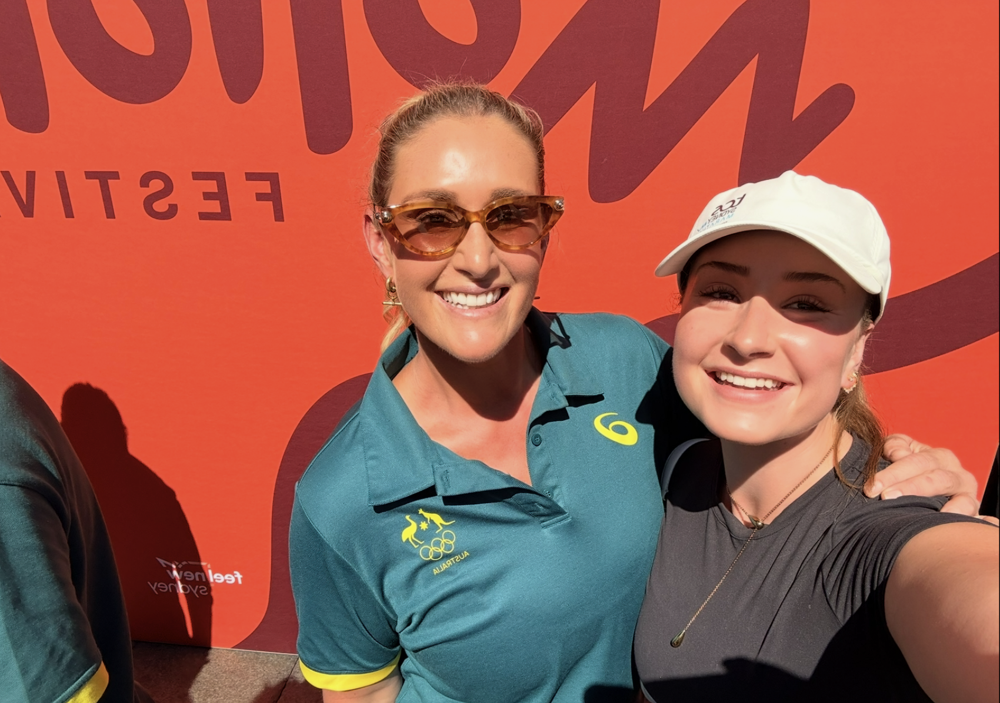
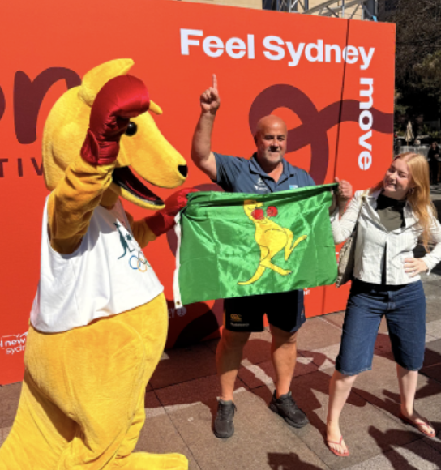
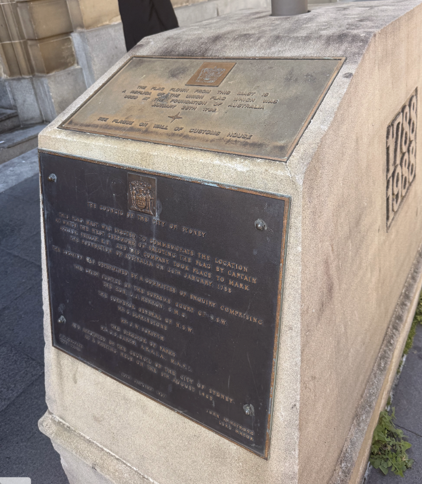

Holly Lincoln-Smith
London 2012 · Rio 2016
Explore Holly’s Olympic journey ↗SYDNEY OPERA HOUSE · OLYMPIC FIELD TRIP
Five fun challenges. One iconic setting.
And a chance to hear from the Aussies
who made it to the Olympic Games.

01 / DOING THE TASK
Our class took on five preset, Olympic-inspired challenges in a friendly competition around the Sydney Opera House.
Egg-and-spoon racing, dance moves, team rowing, a swimming challenge and race walking: these were playful class activities, with our attempts and personal bests recorded on a scorecard.
The fun mattered. We were participating ourselves before listening to people who had spent years working towards Olympic selection. That contrast gave the day its meaning.

BLAIR’S FIELD TRIP SCORECARD
Explored 0 / 5
Open each event for the challenge and my recorded result.
Two goes. Dropping the egg meant a DNF (did not finish).
Times reproduced as recorded on my scorecard.
The preset moves listed were Yawn, Point and Helicopter. The first-attempt field lists Sprinter and Kangaroo Hop.
The sheet calls this “Break Dance: Raygun”: a playful class challenge.
The task specified an in-line formation on stairs, with crews ranked by their scores.
The worksheet labels this “Swimming 100 metres sprint” and says students complete the swim and their time is recorded.
The entry does not specify a unit. This is the class challenge result as written, not an official 100 m swimming performance.
Complete the class course, then be ranked at the end.
“Marathon Race Walking” is the worksheet’s event title; our course was a class activity.
We completed these five preset activities. The original sheet’s general instructions and August 2024 prize deadline belong to the printed template.
“On top of the world.”
My answer, handwritten on the scorecard.
02 / EXPERIENCING
Our field trip took place during Motion Festival at Circular Quay, as Sydney prepared for the TCS Sydney Marathon on Sunday, 30 August 2026. The festival brought movement, sport and Olympians into the same public space. [1] [2]
We received Sydney Marathon hats during the experience. Mine became a small reminder that I had been part of that atmosphere, taking on my own little challenges while the city prepared for something much bigger.


PROOF OF ATTENDANCE
This photograph places me in the setting of the field trip. The scorecard records what I did; the photos preserve the places and people that gave those activities context.
Then came the encounter that stayed with me ↗03 / LISTENING

I had just tried five fun challenges.
They had worked for years to get to the Games.
Through Olympics Unleashed, we met Holly Lincoln-Smith and Brandon Starc. The official Motion Festival programme describes their session as an opportunity to hear about their sporting journeys, the highs and lows, and what it takes to reach the Olympics. [1]
Hearing Olympians speak in person made the significance of representing Australia feel real to me. I started thinking about the work behind selection, and the pride of being part of the team before any medal was won.
These are my reflections on hearing the speakers, not direct quotations or a transcript of the Q&A.
London 2012 · Rio 2016
Explore Holly’s Olympic journey ↗Rio 2016 · Tokyo 2020 · Paris 2024
Explore Brandon’s Olympic journey ↗
ARTEFACT / RECOGNISING A TEAM
My chosen artefact is the Aussie Olympic kangaroo. In the photograph, the mascot and the green-and-gold flag make national identity visible in a playful, approachable way.
For me, this connects the fun of the festival to the pride I heard about from Olympians. A team can be recognised through a symbol, but meeting its athletes gave that symbol a more personal meaning.
STATUE / MONUMENT / READING THE PLACE
For the portfolio’s “statue” component, I photographed this flag memorial and its stone plinth. The plaque commemorates the first saluting of the British flag in 1788; the City of Sydney identifies a First Fleet Flag memorial on Loftus Street. [6]
This is a historical monument rather than an Olympic statue. Placing it alongside the sporting photographs raises a question: how do public places and national symbols shape the stories we tell about belonging?
The monument presents a colonial account of the site. Sydney’s history also includes the continuing presence of the Gadigal people, whose land was never ceded. National identity holds more than one story. [7]

DIFFERENT SCALES / A SHARED EXPERIENCE OF SPORT
Our fun competition sat within a much bigger sporting scene. Explore the connections.
A short class activity gave me an immediate experience of effort and a personal best.
Participation can mean moving, trying and finding a place in a sporting community.
The marathon weekend put our class experience alongside a very different challenge.
Listening shifted my attention towards sustained commitment and preparation.
Olympic selection added the meaning of representing a country on the world stage.
These groups overlap. This is a connection between experiences, not a ranking of their value or an equal comparison of effort.
04 / REFLECTING THE QUESTION
How does Olympic pride in Australia compare with Olympic pride in the United States, in its prestige and cultural importance?
Growing up in the USA, I understood the Olympics as a source of national pride and sporting prestige. I also associated sporting recognition with professional leagues and opportunities to compete in college. That was the perspective I brought to this field trip.
Hearing Australian Olympians speak made the pride of simply making the team stand out to me. The honour of representing Australia seemed significant in its own right, beyond whether an athlete won gold.
I recognise a similar pride in both countries. This experience changed what I paid attention to: selection, sacrifice and belonging, alongside medals. My encounter offers a personal perspective on Australian sporting culture, rather than a measure of which country cares more.
Australia has sent competitors to every Summer Olympics since 1896 and hosted the Games in Melbourne in 1956 and Sydney in 2000. That history places Olympic participation within a longstanding national sporting tradition. National Museum of Australia ↗
Funding systems also differ. Australia’s dAIS programme provides direct support to eligible athletes. The USOPC described itself in its 2022 financial report as a nonprofit without government funding, while reporting support such as athlete health insurance. These are specific institutional differences; they do not establish that every American athlete receives no public assistance, or that funding measures national pride. Australian Sports Commission ↗ · USOPC report ↗
Medals.
Records.
Winners.
Country rankings.
Selection. Sacrifice.
Identity. Representation.
Belonging. Pride.
The most meaningful part of the field trip was the movement between doing and listening. Our friendly competition gave me a point of comparison; hearing Olympians speak showed me the enormous difference between our day of activities and their years of work.
“On top of the world” was how my personal best felt.
Representing your country gave me something bigger to think about.
THE PHOTO PORTFOLIO
SOURCES & CONTEXT
Personal photographs, the completed scorecard and my EDUH4058 photo portfolio anchor this reflection. First-person passages express my account; public facts are supported below. The scorecard’s printed 2024 deadline is template text, not the field-trip date.